Измерить напряжение идеального источника ЭДС. Построить схемы цепей в Multisim. Нарисовать график зависимости напряжения от тока.
Е1 = 25в Е2 = 28в Е3 = 30в
| Напряжение В | Ток мА |
|---|---|
| 25 | 25 |
| 28 | 28 |
| 30 | 30 |
Измерить сопротивление. Построить схему цепи в Multisim.
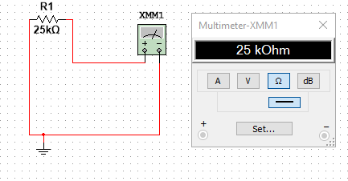
Измерить и вычислить общее сопротивление при параллельном, последовательном и смешанном соединениях резисторов. Построить схемы цепей в Multisim. Убедиться, что значения сопротивлений, вычисленные при помощи формул и измеренные программой, совпадают.
R1 = 25кОм R2 = 26кОм R3 = 27кОм
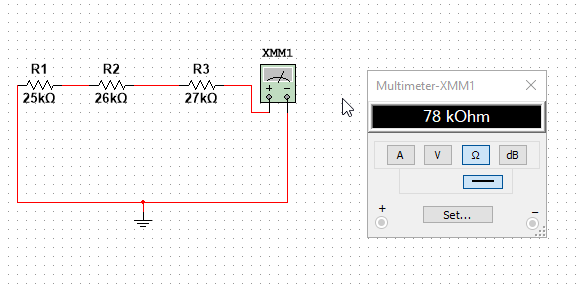
Rэ = 78кОм

Rэ = 8.658
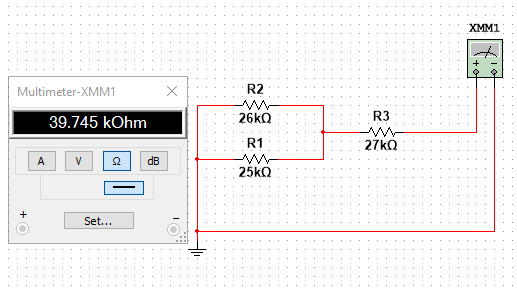
Rэ = 39.745
Составить схему цепи в Multisim. Построить ВАХ сопротивления.
Rн = 25кОм E1 = 25В E2 = 28В E3 = 30В
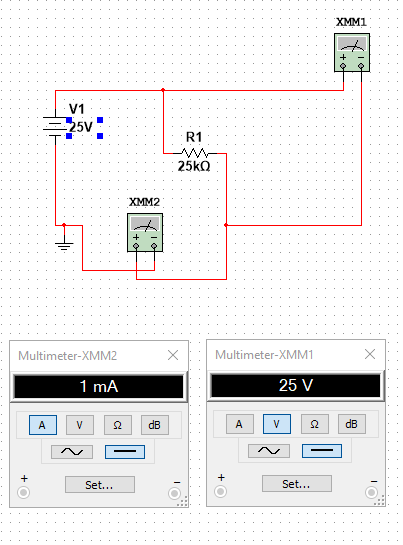
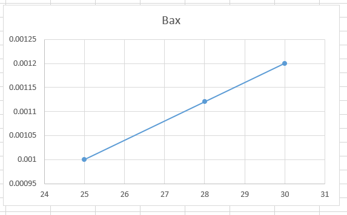
Построить ВАХ реального источника ЭДС. Для этого провести опыты холостого хода и короткого замыкания. Составить схему цепи в Multisim.
E = 25В Rвн = 100Ом
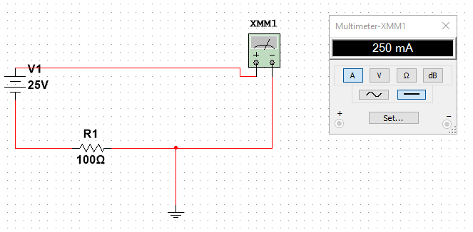
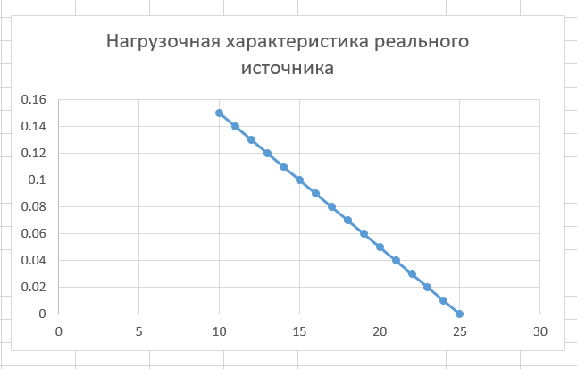
Определить рабочую точку реального источника ЭДС при его работе на нагрузку:


Проанализировать изменения положения рабочей точки при изменении напряжения, внутреннего сопротивления и сопротивления нагрузки. Составить схемы цепей в Multisim. Сравнить результаты эксперимента с расчѐтами цепей. Дано: E1=25v E2=28v E3=30v Rbh=100Om Rh=25ROm


 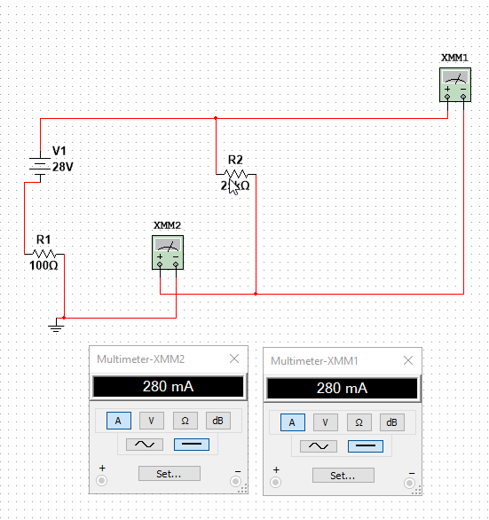
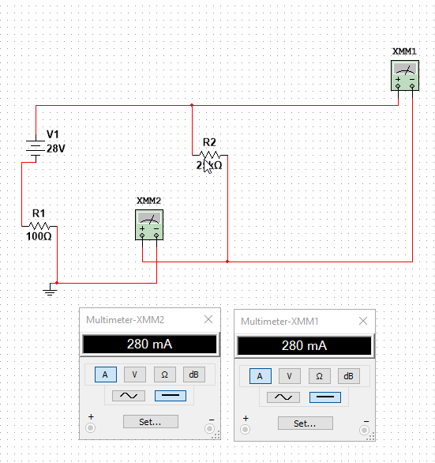


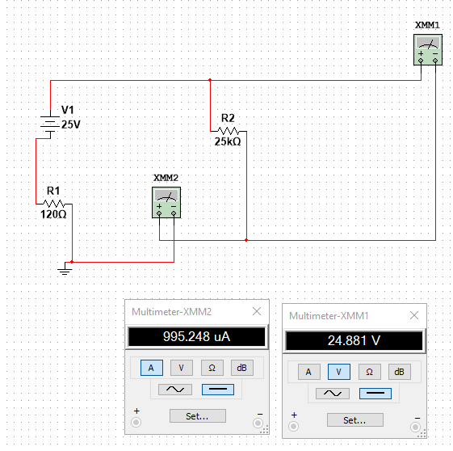


 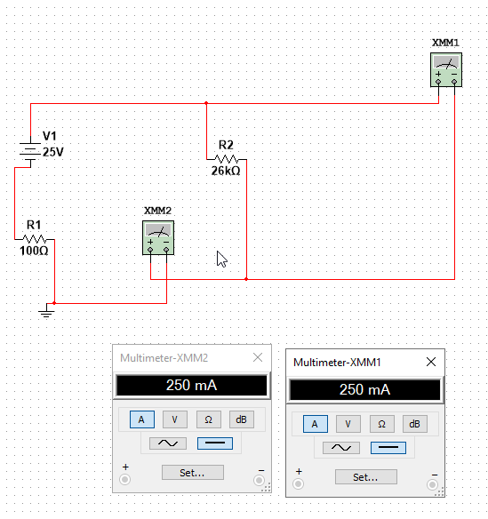
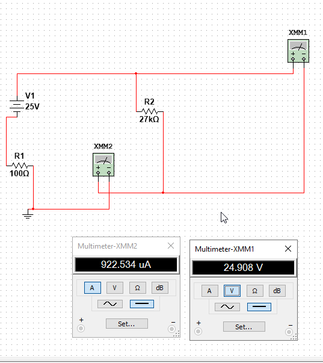
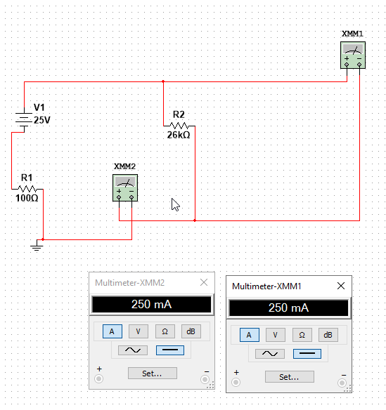
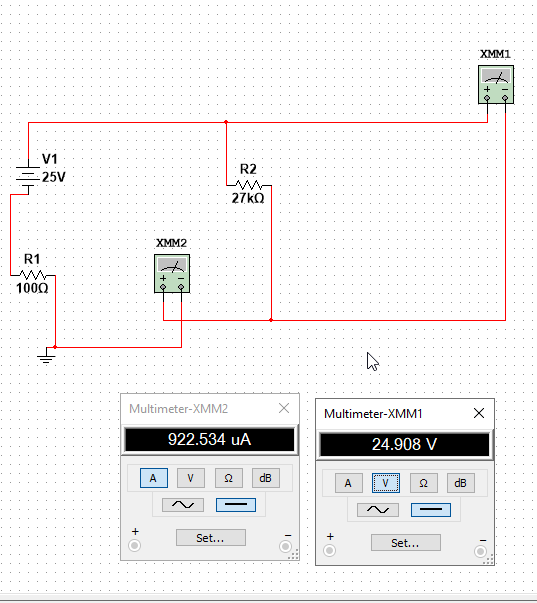


Bсследовать реальный источник тока. Составить схемы цепей в Multisim. Построить ВАХ реального источника тока. Дано: I=1A Rbh=100Om
 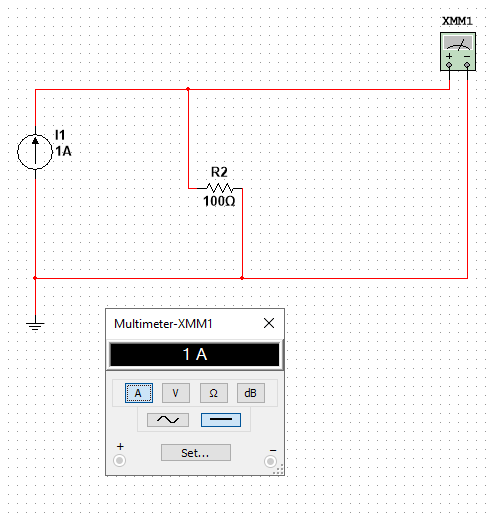
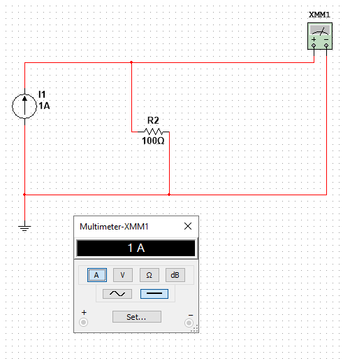

Исследовать поведение характеристик индуктивности и ёмкости на постоянном токе. Составить схемы цепей в Multisim. Для индуктивности: убедиться, что вольтметр показывает «0» при наличии тока, т.е. сопротивление индуктивности равно «0». Для ёмкости: убедиться, что амперметр показывает «0», что означает разрыв цепи, т.е. сопротивление ёмкости равно. Дано: E=25v Rh=100Om L=10mGn C=10mkF
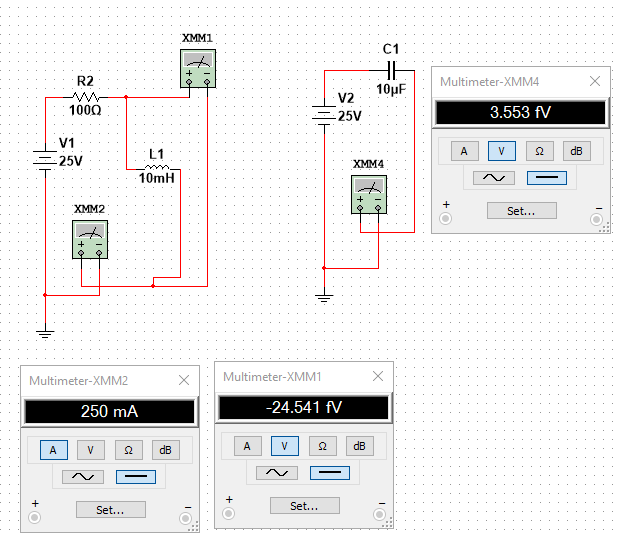
Построить делитель напряжения. Составить схему цепи в Multisim. Сравнить расчѐты, сделанные программой, с расчѐтами, сделанными вручную при помощи формул. Дано: E=25v R1=100om R2=200om


Построить делитель тока, cоставить схему цепи в Multisim, сравнить расчѐты, сделанные программой, с расчѐтами, сделанными вручную при помощи формул. Дано: I=1A R1=120Om R2=240Om